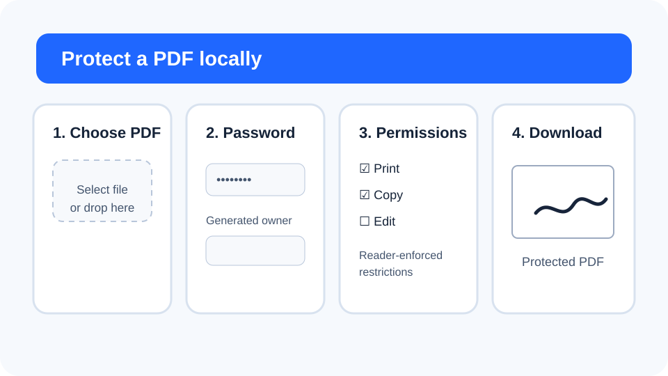
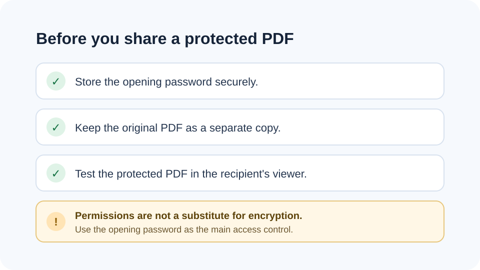

How to password-protect a PDF safely
PDF password protection can be useful when a recipient should need a password to open a document. The strongest part of this workflow is the opening password; permission flags should be treated as secondary controls.


1. Start with the final PDF
Protect the document after you finish editing, reordering or adding a visible signature. Encryption rewrites the PDF, so any certificate-based signature on the source may need to be applied later with an approved signing workflow.
2. Use a strong opening password
Choose a unique password and store it in a password manager when possible. Avoid using the same password as your email, banking or device login.
3. Understand the owner password
PDF encryption can distinguish the password used to open the document from the owner password used by compatible readers to manage permissions. FreePDF Tools generates a separate owner password locally so the two roles are not collapsed into one shared secret.
4. Treat permission flags as secondary controls
Printing, copying and editing restrictions are flags that compatible PDF readers may honor. They are not a substitute for encrypting the file and controlling who receives the opening password.
256-bit encryption and compatibility
The local QPDF engine uses 256-bit PDF encryption. This is the modern security mode recommended by QPDF, but very old PDF viewers may not support it. Test the protected file in the software your recipients actually use.
What to do if you need the password removed later
Keep the opening password. With a known password, the Unlock PDF tool can create an unencrypted copy locally. There is no password-recovery service.
Related PDF security tools
- Remove PDF metadata before sharing.
- Sign PDF after the content is final.
- Read the privacy guide for online PDF converters.